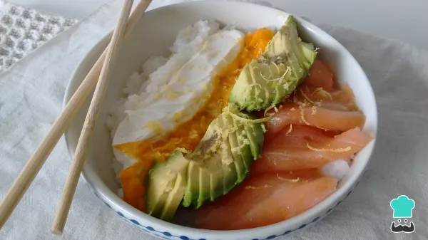

Receta de poke de salmón
Regresar

El poke bowl es un plato típico de Hawaii, creado por los pescadores que combinaban cortes de la pesca del día, con distintos alimentos regionales. Poké significa trocear en su idioma original y esa es la base del plato, presentar distintos ingredientes cortados, listos para comer, de forma elegante y apetitosa. Asimismo, en esta oportunidad, queremos enseñarte a preparar un poke bowl de salmón, el cual combinaremos con arroz, palta, mango y queso Filadelfia. Podrás disfrutarlo como una cena liviana o un almuerzo fresco en los días de calor.
Ingredientes
- ¾ taza de arroz para sushi
- 50 centímetros cúbicos de vinagre blanco
- 30 gramos de azúcar
- 160 gramos de salmón ahumado fileteado
- 1 palta
- ½ barra de mango
- ralladura de limón
Instrucciones
- Para empezar con la preparación del poke bowl de salmón, lleva el arroz a una cacerola tapado por 1 dedo de alto de agua. Enciende la hornalla y reserva hasta que el agua comience a hervir.
- Cuando el agua hierva, retira la cacerola del fuego y tápalo para reposarlo por unos 12 minutos, hasta que absorba el agua y esté tierno.
- Pasado el tiempo, disuelve el azúcar en el vinagre y condimenta el arroz con esa preparación. Enfríalo en heladera por al menos una hora.
- Cuando tu arroz esté frío, comienza a armar el poke bowl de salmón. Para ello, corta el mango en cubos y distribúyelo en un sector. En otro, añade el queso. Puedes hacerlo con una cuchara o una manga, para tener una presentación distinta. También agrega el salmón ahumado y fileteado, la palta cortada en láminas finas y termina con ralladura de limón.
- ¡Y así tienes listo el poke bowl de salmón! ¿Qué te pareció esta receta? Cuéntanos en los comentarios y comparte la foto de tu resultado final.